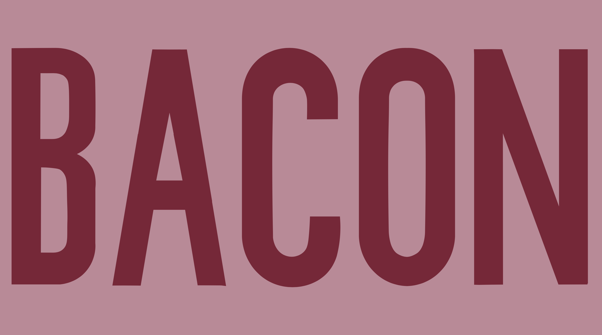
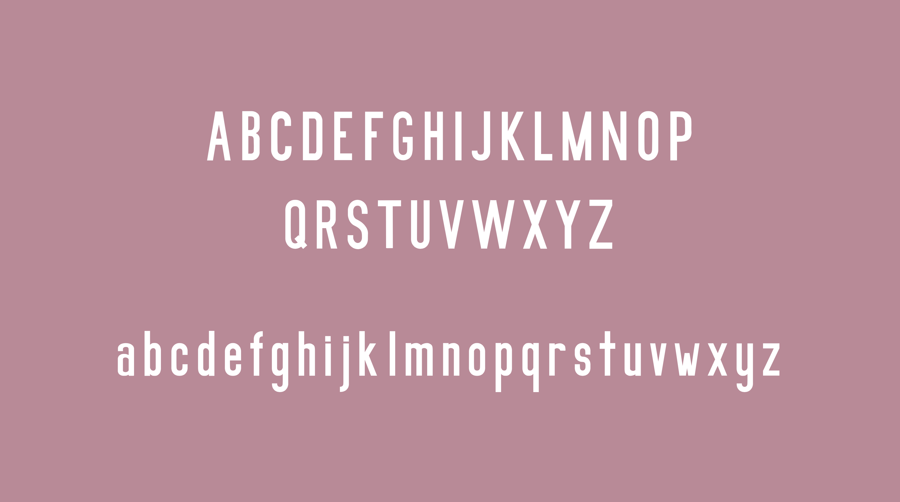
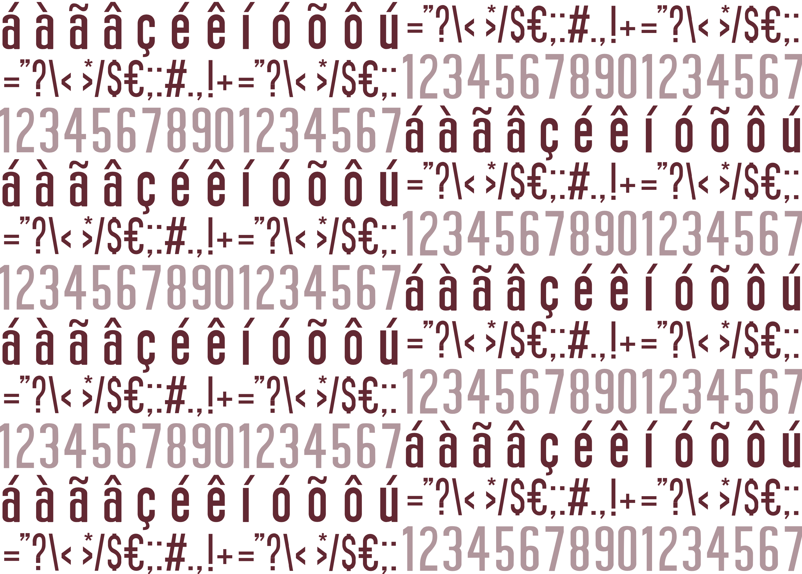
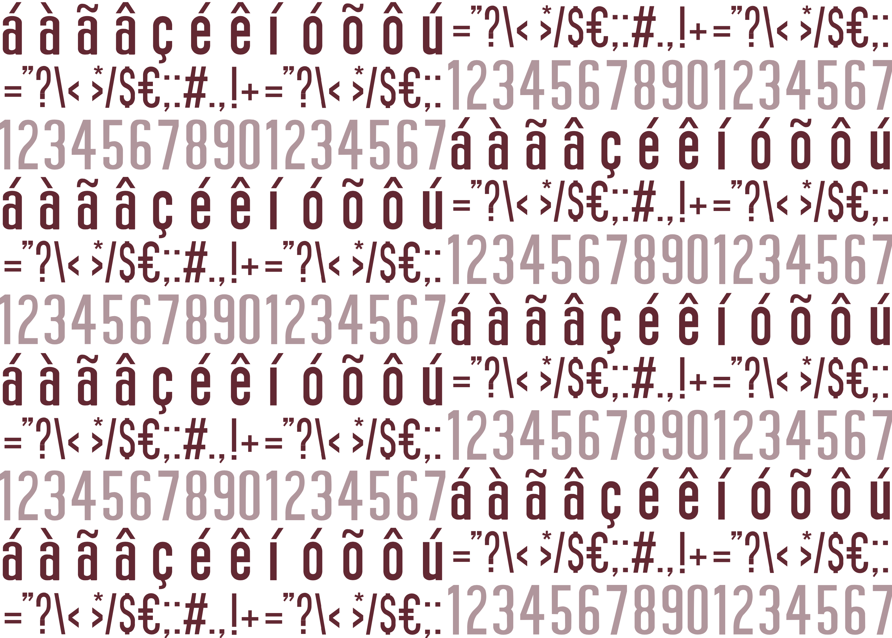

Tenho 20 anos e frequento o 2º ano da Licenciatura em Design, na Universidade de Aveiro. Desde março de 2020, faço parte da Junior Empresa Aveiro Smart Bussines
FORMAÇÃO E EXPERIÊNCIA PROFISSIONAL
Criativa, organizada, com pensamento crítico, resiliente e com atitude proativa.
Língua Portuguesa, Inglesa (First Certificate in English - B2) e Espanhola (B1)
Contactos:
Naturalidade: Leiria
Nacionalidade: Portuguesa
| 2018/2019 | Desenho Geométrico | Concordâncias Uma letra... |
|---|---|---|
| Movimentos Artísticos Conemporâneos | OVER AGAIN | |
| Estética | Art City Art Creations | |
| Projeto em Design I | Paisana | |
| Tipografia | Projeto tipográfico | |
| 2019/2020 | Projeto em Design II | LOOP |
| Projeto em Design III | Cover me |
No âmbito da disciplina de Estética, foi proposta a caracterização da cidade de Aveiro para o projeto Art City Art Creations. Neste seguimento, no projeto aborda-se a temática das influências da ria e do mar nesta cidade e a sua exploração de forma artística.


PAISANA é uma organização que visa alertar para o consumo e desperdício de plástico, entre outros resíduos, no dia a dia e como estes impactam o ambiente. Assim, o nosso objetivo é, a partir de intervenções e parcerias com escolas e outros tipos de associações, fazer uma recolha de resíduos e com estes criar instalações temporárias em locais públicos com o objetivo de chocar e consciencializar a população no geral para este consumo e produção de lixo exagerado. Sendo que depois este lixo seria reencaminhado através das carrinhas/camiões da nossa empresa para locais apropriados para o tratamento do mesmo.


Análise e compreensão da forma das letras, legibilidade e composição espacial comdo reforço do conceito.


Desenvolvimento de uma fonte tipográfica. BACON é uma fonte simples por não conter serifas, no entanto, pesada devido à sua expessura. Regular e condensada são duas características que se destacam assim que nos deparamos com as manchas de texto. Apesar de ser utilizada para corpos de texto, é mais aconselhada para destaques ou títulos. O tamanho mínimo aconselhável para a utilização desta fonte em texto corrido é de 14 pts.
  

Uma sapateira composta por módulos adquiridos individualmente e conforme a necessidade do utilizador Em cada módulo cabem 3 separadores -também desenvolvidos por nós- em que nos quais cabem 2 pares de sapatos, ou seja, por cada módulo, por norma, o utilizador pode guardar 6 pares de sapatos Para além de guardar o calçado, tem também a função de suportar guarda chuvas nas laterais, sendo que as aberturas que têm este efeito podem também ajudar no reposicionamento do módulo caso o utilizador assim o deseje.